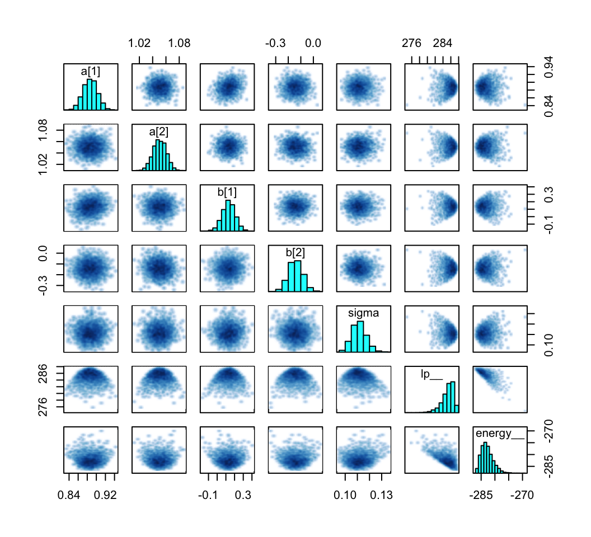
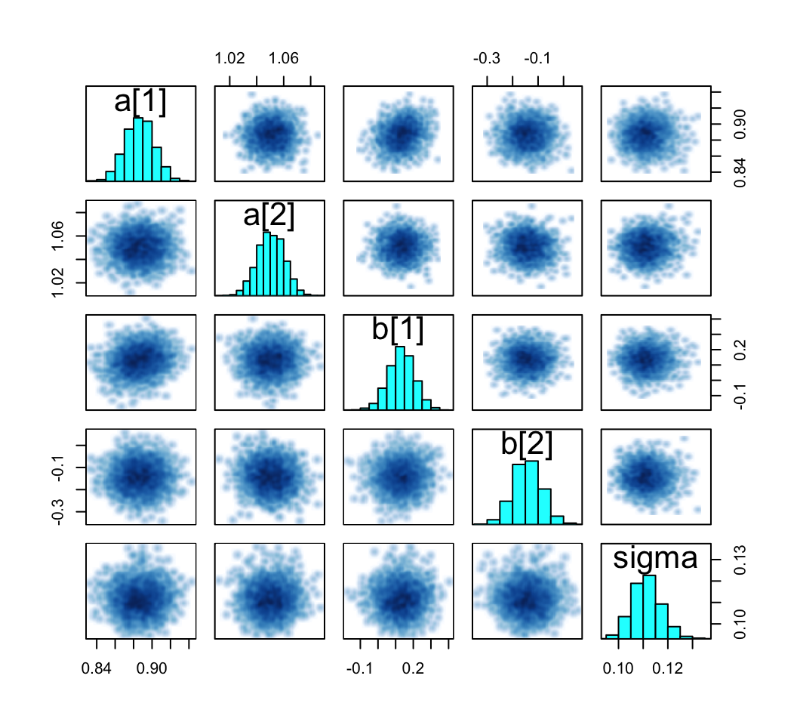
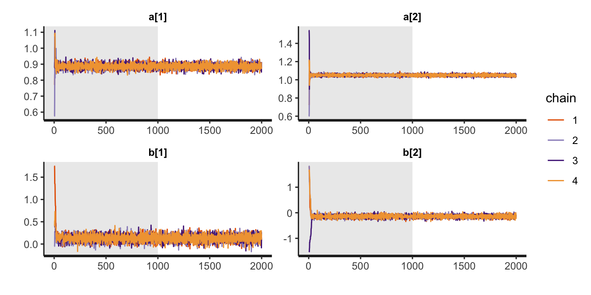
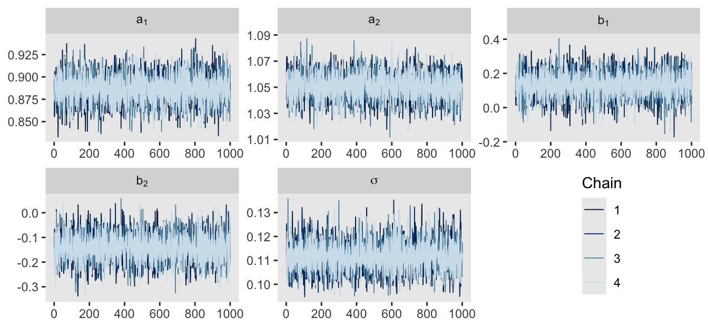
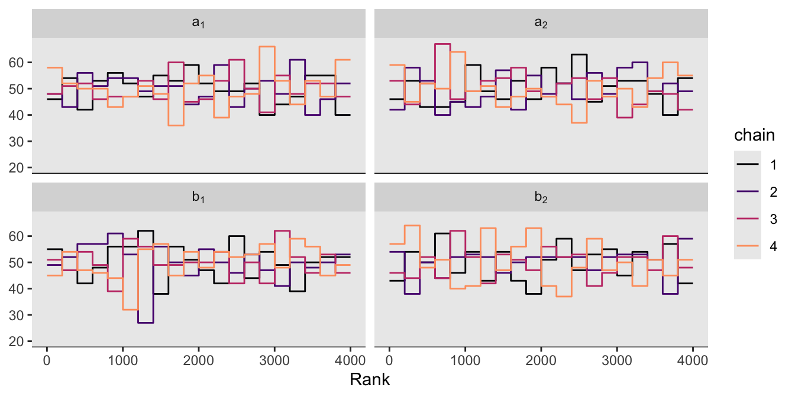
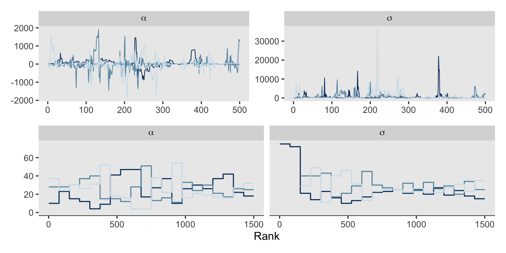
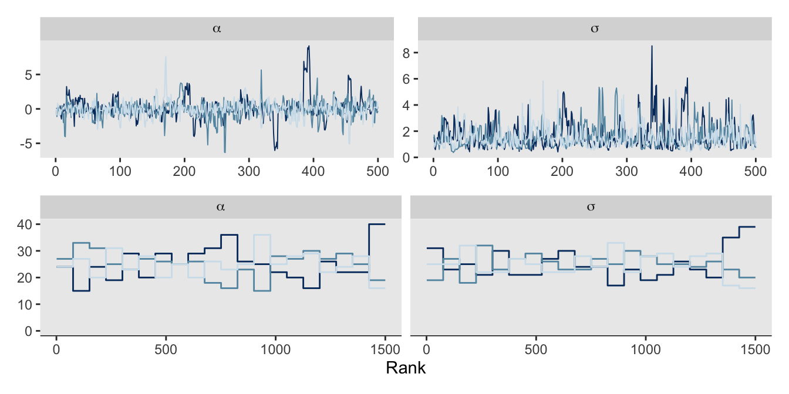
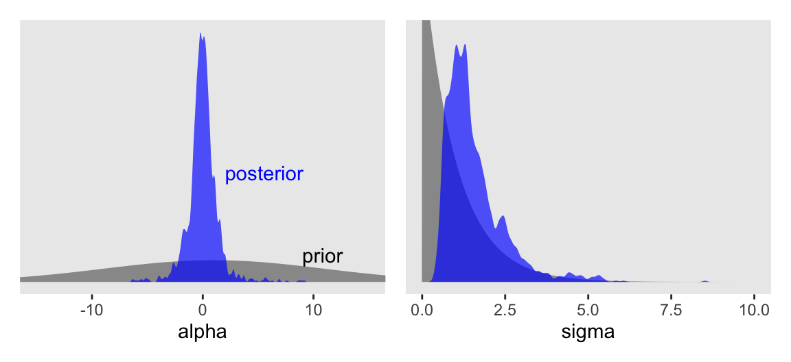
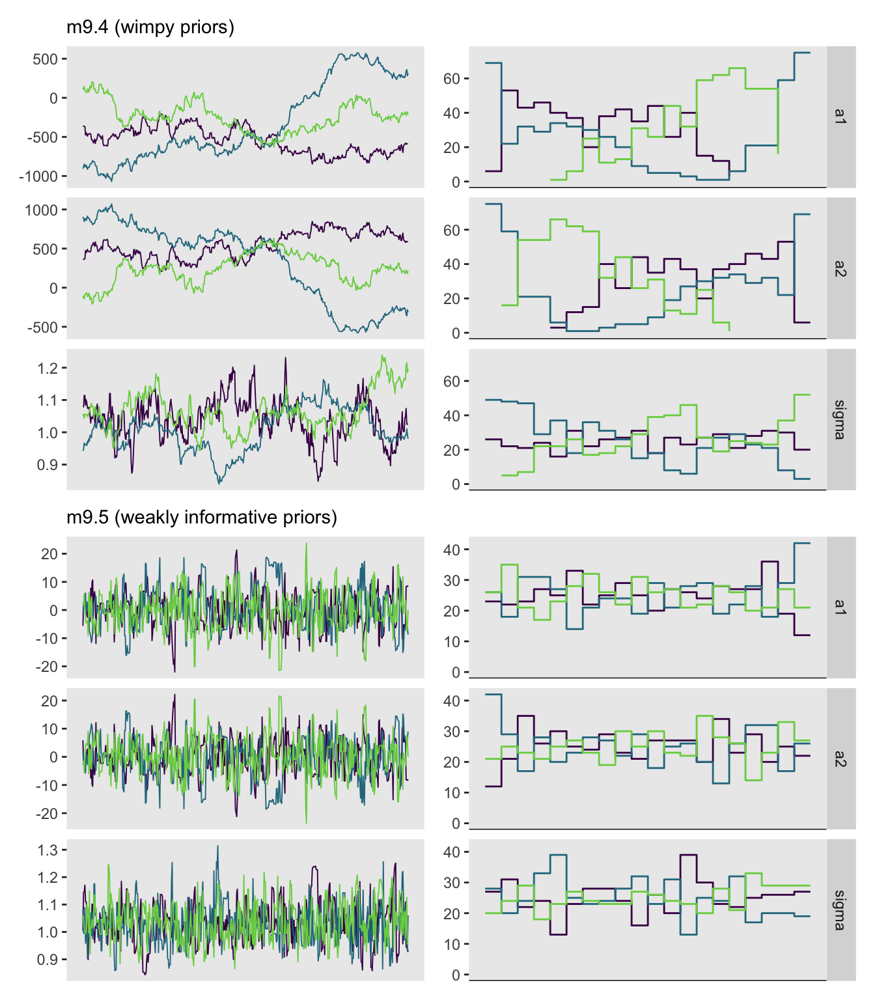

# Load
library(tidyverse)
library(patchwork)
library(rstan)
library(posterior)
library(tidybayes)
library(bayesplot)
# Drop grid lines
theme_set(
theme_gray() +
theme(panel.grid = element_blank())
)9 Markov Chain Monte Carlo
Load the packages.
9.0.0.1 Rethinking: Stan was a man.
9.1 Good King Markov and his island kingdom
9.2 Metropolis algorithms
9.2.1 Gibbs sampling.
9.2.2 High-dimensional problems.
9.3 Hamiltonian Monte Carlo
9.3.1 Another parable.
9.3.1.1 Rethinking: Hamiltonians.
9.3.2 Particles in space.
9.3.2.1 Overthinking: Hamiltonian Monte Carlo in the raw.
9.3.3 Limitations.
9.3.3.1 Rethinking: The MCMC horizon.
9.4 Easy HMC: ulam stan()
Here we load the rugged data.
data(rugged, package = "rethinking")
d <- rugged
rm(rugged)Wrangle the data a bit.
d <- d |>
mutate(log_gdp = log(rgdppc_2000))
dd <- d |>
drop_na(rgdppc_2000) |>
mutate(log_gdp_std = log_gdp / mean(log_gdp),
rugged_std = rugged / max(rugged),
cid = ifelse(cont_africa == 1, "1", "2")) |>
mutate(rugged_std_c = rugged_std - mean(rugged_std))In the context of this chapter, it doesn’t make sense to translate McElreath’s m8.3 quap() code to stan() code. Below, we’ll just go directly to the stan() variant of his m9.1.
9.4.1 Preparation.
Wrangle the data into a list with the compose_data() function. McElreath called his data list dat_slim. Here we’ll follow the conventions from earlier chapters and call the object stan_data.
stan_data <- dd |>
select(log_gdp_std, rugged_std, cid, rugged_std_c) |>
compose_data()
# What?
str(stan_data)List of 6
$ log_gdp_std : num [1:170(1d)] 0.88 0.965 1.166 1.104 0.915 ...
$ rugged_std : num [1:170(1d)] 0.138 0.553 0.124 0.125 0.433 ...
$ cid : num [1:170(1d)] 1 2 2 2 2 2 2 2 2 1 ...
$ n_cid : int 2
$ rugged_std_c: num [1:170(1d)] -0.0766 0.3376 -0.091 -0.09 0.2184 ...
$ n : int 1709.4.2 Sampling from the posterior.
Here our model_code_9.1 is just a different version of model_code_8.3 from Section 8.1.3. Since we don’t need the log-likelihood for this chapter, we’ve streamlined this version of the program a bit by removing the transformed parameters and generated quantities. We’ve also taken a cue from McElreath’s code by hardcoding the value 0.215 into the model block, rather than importing the xbar scalar from the data list.
model_code_9.1 <- '
data {
int<lower=1> n;
int<lower=1> n_cid;
array[n] int cid;
vector[n] rugged_std;
vector[n] log_gdp_std;
}
parameters {
vector[n_cid] a;
vector[n_cid] b;
real<lower=0> sigma;
}
model {
vector[n] mu;
mu = a[cid] + b[cid] .* (rugged_std - 0.215);
log_gdp_std ~ normal(mu, sigma);
a ~ normal(1, 0.1);
b ~ normal(0, 0.3);
sigma ~ exponential(1);
}
'Sample with stan(). Note how we’re following McElreath’s lead by setting chains = 1.
m9.1 <- stan(
data = stan_data,
model_code = model_code_9.1,
chains = 1, seed = 9)Here is a summary of the posterior.
print(m9.1, probs = c(0.055, 0.945))Inference for Stan model: anon_model.
1 chains, each with iter=2000; warmup=1000; thin=1;
post-warmup draws per chain=1000, total post-warmup draws=1000.
mean se_mean sd 5.5% 94.5% n_eff Rhat
a[1] 0.89 0.00 0.02 0.86 0.91 1417 1
a[2] 1.05 0.00 0.01 1.03 1.07 1671 1
b[1] 0.13 0.00 0.07 0.01 0.25 1208 1
b[2] -0.14 0.00 0.06 -0.23 -0.06 1522 1
sigma 0.11 0.00 0.01 0.10 0.12 1395 1
lp__ 285.32 0.07 1.51 282.70 287.10 499 1
Samples were drawn using NUTS(diag_e) at Wed Aug 14 10:54:09 2024.
For each parameter, n_eff is a crude measure of effective sample size,
and Rhat is the potential scale reduction factor on split chains (at
convergence, Rhat=1).9.4.3 Sampling again, in parallel.
Here we sample from four HMC chains in parallel by adding cores = 4. Though chains = 4 is the default setting in stan(), here we make it explicit. This time we’ll call the object m9.1b.
m9.1b <- stan(
data = stan_data,
model_code = model_code_9.1,
chains = 4, cores = 4, seed = 9)Here is a summary of the posterior.
print(m9.1b, probs = c(0.055, 0.945))Inference for Stan model: anon_model.
4 chains, each with iter=2000; warmup=1000; thin=1;
post-warmup draws per chain=1000, total post-warmup draws=4000.
mean se_mean sd 5.5% 94.5% n_eff Rhat
a[1] 0.89 0.00 0.02 0.86 0.91 4888 1
a[2] 1.05 0.00 0.01 1.03 1.07 5142 1
b[1] 0.13 0.00 0.07 0.01 0.25 4317 1
b[2] -0.14 0.00 0.06 -0.23 -0.05 5013 1
sigma 0.11 0.00 0.01 0.10 0.12 5015 1
lp__ 285.22 0.03 1.55 282.27 287.06 2024 1
Samples were drawn using NUTS(diag_e) at Sun Aug 11 17:38:51 2024.
For each parameter, n_eff is a crude measure of effective sample size,
and Rhat is the potential scale reduction factor on split chains (at
convergence, Rhat=1).The show() function does not work for rstan models the same way it does with those from rethinking. Rather, show() returns the same information we’d get from print().
show(m9.1b)Inference for Stan model: anon_model.
4 chains, each with iter=2000; warmup=1000; thin=1;
post-warmup draws per chain=1000, total post-warmup draws=4000.
mean se_mean sd 2.5% 25% 50% 75% 97.5% n_eff Rhat
a[1] 0.89 0.00 0.02 0.86 0.88 0.89 0.90 0.92 4888 1
a[2] 1.05 0.00 0.01 1.03 1.04 1.05 1.06 1.07 5142 1
b[1] 0.13 0.00 0.07 -0.01 0.09 0.13 0.18 0.28 4317 1
b[2] -0.14 0.00 0.06 -0.25 -0.18 -0.14 -0.10 -0.03 5013 1
sigma 0.11 0.00 0.01 0.10 0.11 0.11 0.12 0.12 5015 1
lp__ 285.22 0.03 1.55 281.31 284.49 285.55 286.33 287.25 2024 1
Samples were drawn using NUTS(diag_e) at Sun Aug 11 17:38:51 2024.
For each parameter, n_eff is a crude measure of effective sample size,
and Rhat is the potential scale reduction factor on split chains (at
convergence, Rhat=1).You can get a focused look at the formula and prior information from an rstan fit object by subsetting the stanmodel portion of the object.
m9.1b@stanmodelS4 class stanmodel 'anon_model' coded as follows:
data {
int<lower=1> n;
int<lower=1> n_cid;
int cid[n];
vector[n] rugged_std;
vector[n] log_gdp_std;
}
parameters {
vector[n_cid] a;
vector[n_cid] b;
real<lower=0> sigma;
}
model {
vector[n] mu;
mu = a[cid] + b[cid] .* (rugged_std - 0.215);
log_gdp_std ~ normal(mu, sigma);
a ~ normal(1, 0.1);
b ~ normal(0, 0.3);
sigma ~ exponential(1);
} You can also extract that information with the get_stanmodel() function.
get_stanmodel(m9.1b)S4 class stanmodel 'anon_model' coded as follows:
data {
int<lower=1> n;
int<lower=1> n_cid;
int cid[n];
vector[n] rugged_std;
vector[n] log_gdp_std;
}
parameters {
vector[n_cid] a;
vector[n_cid] b;
real<lower=0> sigma;
}
model {
vector[n] mu;
mu = a[cid] + b[cid] .* (rugged_std - 0.215);
log_gdp_std ~ normal(mu, sigma);
a ~ normal(1, 0.1);
b ~ normal(0, 0.3);
sigma ~ exponential(1);
} You can use the get_elapsed_time() function to extract the duration in seconds each chain took during the warmup and post-warmup sampling phases. I believe McElreath’s third column total is just the sum of the warmup and sample columns.
get_elapsed_time(m9.1b) warmup sample
chain:1 0.037 0.035
chain:2 0.038 0.038
chain:3 0.036 0.034
chain:4 0.041 0.042As to the diagnostic statistics, you can compute the \(\widehat R\) and effective-sample-size statistics with the posterior::summarise_draws() function, particularly with the nice helper function called default_convergence_measures().
summarise_draws(m9.1b, default_convergence_measures())# A tibble: 6 × 4
variable rhat ess_bulk ess_tail
<chr> <dbl> <dbl> <dbl>
1 a[1] 1.00 4965. 3126.
2 a[2] 1.00 5156. 2945.
3 b[1] 1.00 4359. 3110.
4 b[2] 1.00 5060. 3140.
5 sigma 1.00 5115. 2962.
6 lp__ 1.00 1968. 2610.9.4.4 Visualization.
As with McElreath’s rethinking, rstan allows users to put the fit object directly into the pairs() function.
pairs(m9.1b)
However, pairs() also includes the lp__ and energy in the output. These can be suppressed with the pars argument.
pairs(m9.1b, pars = c("a", "b", "sigma"))
Our output is a little different in that we don’t get a lower-triangle of Pearson’s correlation coefficients. If you’d like those values, use cor() after extracting the desired parameter columns with as_draws_df() and select().
as_draws_df(m9.1b) %>%
select(`a[1]`:sigma) %>%
cor() a[1] a[2] b[1] b[2] sigma
a[1] 1.000000000 0.01261124 0.19425541 0.009139623 0.01997169
a[2] 0.012611240 1.00000000 0.01059454 -0.080636370 0.03328394
b[1] 0.194255410 0.01059454 1.00000000 0.028562249 0.01808661
b[2] 0.009139623 -0.08063637 0.02856225 1.000000000 -0.03518082
sigma 0.019971693 0.03328394 0.01808661 -0.035180821 1.00000000If you need to customize a pairs()-type plot much further than this, you’re probably best off moving to a GGally::ggpairs()-based workflow, such as we demonstrate later in Section 12.4.
9.4.5 Checking the chain.
Here we apply the traceplot() to m9.1b. The default settings are inc_warmup = FALSE, which means we need to change that to TRUE if we want to see the warmup draws, like in the plots McElreath tends to show in the text.
traceplot(m9.1b, inc_warmup = TRUE, pars = c("a", "b"))
We can make similar plots with the mcmc_trace() function from the bayesplot package. Note that mcmc_trace() will accept stan() model objects as direct input, but it will also accept input from as_draws_df(), as in below. As mcmc_trace() returns a ggplot object, you can adjust the plot in the usual way with other functions like theme().
as_draws_df(m9.1b) |>
mcmc_trace(pars = vars(`a[1]`:sigma),
facet_args = list(ncol = 3, labeller = label_parsed)) +
theme(legend.position = c(0.85, 0.25))
Note however that as the as_draws_df() function only returns post-warmup draws, this workflow will not produce traceplots like the ones in the text that show the warmup portion.
McElreath pointed out a second way to visualize the chains is by the distribution of the ranked samples, which he called a trank plot (short for trace rank plot). I’m not aware that rstan has a built-in function for that. We can, however, make them with the mcmc_rank_overlay() function from bayesplot.
as_draws_df(m9.1b) |>
mcmc_rank_overlay(pars = vars(`a[1]`:`b[2]`),
facet_args = list(labeller = label_parsed)) +
scale_color_viridis_d(option = "A", end = 0.8) +
coord_cartesian(ylim = c(20, NA))
9.4.5.1 Overthinking: Raw Stan model code.
9.5 Care and feeding of your Markov chain
9.5.1 How many samples do you need?
9.5.1.1 Rethinking: Warmup is not burn-in.
9.5.2 How many chains do you need?
9.5.2.1 Rethinking: Convergence diagnostics.
9.5.3 Taming a wild chain.
Define the new very-small stan_data.
stan_data <- tibble(y = c(-1, 1)) |>
compose_data()
# What?
str(stan_data)List of 2
$ y: num [1:2(1d)] -1 1
$ n: int 2Make model_code_9.2.
model_code_9.2 <- '
data {
int<lower=1> n;
vector[n] y;
}
parameters {
real alpha;
real<lower=0> sigma;
}
model {
y ~ normal(alpha, sigma);
alpha ~ normal(0, 1000);
sigma ~ exponential(0.0001);
}
'Compile and sample with stan().
m9.2 <- stan(
data = stan_data,
model_code = model_code_9.2,
chains = 3, cores = 3, iter = 1000, seed = 9)Let’s peek at the summary.
print(m9.2, probs = c(0.055, 0.945))Inference for Stan model: anon_model.
3 chains, each with iter=1000; warmup=500; thin=1;
post-warmup draws per chain=500, total post-warmup draws=1500.
mean se_mean sd 5.5% 94.5% n_eff Rhat
alpha 14.06 22.46 318.49 -412.73 434.61 201 1.00
sigma 641.08 133.85 1895.96 9.48 2481.00 201 1.01
lp__ -5.51 0.25 1.91 -8.83 -2.70 56 1.06
Samples were drawn using NUTS(diag_e) at Sun Aug 11 17:39:20 2024.
For each parameter, n_eff is a crude measure of effective sample size,
and Rhat is the potential scale reduction factor on split chains (at
convergence, Rhat=1).Much like in the text, this summary is a disaster. If you actually fit the model in your computer, note the warning about divergent transitions. The nuts_params() function from bayesplot allows use to pull a wealth of diagnostic information. The different kinds of diagnostics are listed in the Parameter column.
nuts_params(m9.2) |>
distinct(Parameter) Parameter
1 accept_stat__
2 stepsize__
3 treedepth__
4 n_leapfrog__
5 divergent__
6 energy__Our interest is for when Parameter == "divergent__".
nuts_params(m9.2) |>
filter(Parameter == "divergent__") |>
count(Value) Value n
1 0 1286
2 1 214This indicates that among the 3,000 post-warmup draws, 214 were classified as divergent transitions.
Here are the trace and rank plots for m9.2, which make the top two rows of our version of Figure 9.9.
# Trace
p1 <- as_draws_df(m9.2) |>
mcmc_trace(pars = vars(alpha:sigma),
facet_args = list(labeller = label_parsed))
# Trank
p2 <- as_draws_df(m9.2) |>
mcmc_rank_overlay(pars = vars(alpha:sigma),
facet_args = list(labeller = label_parsed))
# Combine
(p1 / p2) &
theme(legend.position = "none")
Okay, that’s enough disaster. Let’s try a model that adds just a little information by way of weakly-regularizing priors:
\[ \begin{align*} y_i & \sim \operatorname{Normal}(\alpha, \sigma) \\ \alpha & \sim \operatorname{Normal}(1, 10) \\ \sigma & \sim \operatorname{Exponential}(1). \end{align*} \]
Watch our new priors save the day.
model_code_9.3 <- '
data {
int<lower=1> n;
vector[n] y;
}
parameters {
real alpha;
real<lower=0> sigma;
}
model {
y ~ normal(alpha, sigma);
alpha ~ normal(1, 10);
sigma ~ exponential(1);
}
'
m9.3 <- stan(
data = stan_data,
model_code = model_code_9.3,
chains = 3, cores = 3, iter = 1000, seed = 9)Unlike in the text, we still got one divergent transition.
nuts_params(m9.3) |>
filter(Parameter == "divergent__") |>
count(Value) Value n
1 0 1499
2 1 1However, the overall parameter summary looks much better.
print(m9.3, probs = c(0.055, 0.945))Inference for Stan model: anon_model.
3 chains, each with iter=1000; warmup=500; thin=1;
post-warmup draws per chain=500, total post-warmup draws=1500.
mean se_mean sd 5.5% 94.5% n_eff Rhat
alpha -0.01 0.09 1.37 -1.92 1.75 258 1.00
sigma 1.57 0.05 0.90 0.65 3.16 373 1.00
lp__ -3.24 0.07 1.27 -5.72 -2.08 315 1.01
Samples were drawn using NUTS(diag_e) at Sun Aug 11 17:39:44 2024.
For each parameter, n_eff is a crude measure of effective sample size,
and Rhat is the potential scale reduction factor on split chains (at
convergence, Rhat=1).The trace and trank plots look better, too. Though frankly, they’re still not great. Don’t try to fit models with 2 data points, friends.
# Trace
p1 <- as_draws_df(m9.3) |>
mcmc_trace(pars = vars(alpha:sigma),
facet_args = list(labeller = label_parsed))
# Trank
p2 <- as_draws_df(m9.3) |>
mcmc_rank_overlay(pars = vars(alpha:sigma),
facet_args = list(labeller = label_parsed))
# Combine
(p1 / p2) &
theme(legend.position = "none")
Now behold our version of Figure 9.10.
draws <- as_draws_df(m9.3)
# alpha
p1 <- tibble(alpha = seq(from = -17, to = 17, length.out = 501)) |>
mutate(density = dnorm(x = alpha, mean = 1, sd = 10)) |>
ggplot(aes(x = alpha)) +
geom_area(aes(y = density),
fill = "gray60") +
geom_density(data = draws,
adjust = 1/2, alpha = 2/3, fill = "blue", linewidth = 0) +
annotate(geom = "text",
x = c(9, 2), y = c(0.05, 0.2),
label = c("prior", "posterior"),
color = c("black", "blue"), hjust = 0) +
coord_cartesian(xlim = c(-15, 15))
# sigma
p2 <- tibble(sigma = seq(from = 0, to = 12, length.out = 501)) |>
mutate(density = dexp(x = sigma, rate = 1)) |>
ggplot(aes(x = sigma)) +
geom_area(aes(y = density),
fill = "gray60") +
geom_density(data = draws,
adjust = 1/2, alpha = 2/3, fill = "blue", linewidth = 0) +
coord_cartesian(xlim = c(0, 10),
ylim = c(0, 0.75))
# Combine
(p1 | p2) &
scale_y_continuous(NULL, breaks = NULL)
9.5.3.1 Rethinking: The folk theorem of statistical computing.
9.5.3.2 Overthinking: Divergent transitions are your friend.
9.5.4 Non-identifiable parameters.
Update the stan_data.
set.seed(41)
stan_data <- tibble(y = rnorm(n = 100, mean = 0, sd = 1)) |>
compose_data()
# What?
str(stan_data)List of 2
$ y: num [1:100(1d)] -0.794 0.197 1.002 1.289 0.906 ...
$ n: int 100Make model_code_9.4.
model_code_9.4 <- '
data {
int<lower=1> n;
vector[n] y;
}
parameters {
real a1;
real a2;
real<lower=0> sigma;
}
model {
y ~ normal(a1 + a2, sigma);
[a1, a2] ~ normal(0, 1000);
sigma ~ exponential(1);
}
'Compile and sample with stan().
m9.4 <- stan(
data = stan_data,
model_code = model_code_9.4,
chains = 3, cores = 3, iter = 1000, seed = 384)Our model results don’t perfectly mirror McElreath’s, but they’re right with his in spirit.
print(m9.4, probs = c(0.055, 0.945))Inference for Stan model: anon_model.
3 chains, each with iter=1000; warmup=500; thin=1;
post-warmup draws per chain=500, total post-warmup draws=1500.
mean se_mean sd 5.5% 94.5% n_eff Rhat
a1 -369.46 125.64 349.79 -826.49 363.39 8 1.77
a2 369.65 125.64 349.78 -363.14 826.63 8 1.77
sigma 1.04 0.01 0.07 0.93 1.15 20 1.18
lp__ -54.48 0.11 1.02 -56.36 -53.48 88 1.05
Samples were drawn using NUTS(diag_e) at Sun Aug 11 17:40:09 2024.
For each parameter, n_eff is a crude measure of effective sample size,
and Rhat is the potential scale reduction factor on split chains (at
convergence, Rhat=1).If you’re following along on your computer, note the frightening warning messages. You can also check the HMC diagnostic messages of a stan() model with the check_hmc_diagnostics() function.
check_hmc_diagnostics(m9.4)
Divergences:0 of 1500 iterations ended with a divergence.
Tree depth:1198 of 1500 iterations saturated the maximum tree depth of 10 (79.8666666666667%).
Try increasing 'max_treedepth' to avoid saturation.
Energy:E-BFMI indicated no pathological behavior.Those iterations flagged for tree depth are also often called “transitions” in the red warning messages you’ll get at the end of a stan() call. You generally want that number to be zero out of the total draws.
Now we try again with tighter priors for the \(\mu\) model.
model_code_9.5 <- '
data {
int<lower=1> n;
vector[n] y;
}
parameters {
real a1;
real a2;
real<lower=0> sigma;
}
model {
y ~ normal(a1 + a2, sigma);
[a1, a2] ~ normal(0, 10); // This is the only change
sigma ~ exponential(1);
}
'
m9.5 <- stan(
data = stan_data,
model_code = model_code_9.5,
chains = 3, cores = 3, iter = 1000, seed = 384)How’d we do?
print(m9.5, probs = c(0.055, 0.945))Inference for Stan model: anon_model.
3 chains, each with iter=1000; warmup=500; thin=1;
post-warmup draws per chain=500, total post-warmup draws=1500.
mean se_mean sd 5.5% 94.5% n_eff Rhat
a1 0.21 0.40 6.97 -10.14 11.58 298 1.01
a2 -0.02 0.40 6.97 -11.36 10.34 299 1.01
sigma 1.03 0.00 0.07 0.92 1.16 449 1.01
lp__ -54.74 0.06 1.18 -57.01 -53.45 341 1.00
Samples were drawn using NUTS(diag_e) at Sun Aug 11 17:40:33 2024.
For each parameter, n_eff is a crude measure of effective sample size,
and Rhat is the potential scale reduction factor on split chains (at
convergence, Rhat=1).This looks better. How about the check_hmc_diagnostics() output.
check_hmc_diagnostics(m9.5)
Divergences:0 of 1500 iterations ended with a divergence.
Tree depth:0 of 1500 iterations saturated the maximum tree depth of 10.
Energy:E-BFMI indicated no pathological behavior.Hooray!
Finish off the chapter with Figure 9.11.
# m9.4, trace
p1 <- as_draws_df(m9.4) |>
mcmc_trace(pars = vars(a1:sigma),
facet_args = list(ncol = 1)) +
labs(subtitle = "m9.4 (wimpy priors)") +
theme(legend.position = "none",
strip.text = element_blank())
# m9.4, trank
p2 <- as_draws_df(m9.4) |>
mcmc_rank_overlay(pars = vars(a1:sigma),
facet_args = list(ncol = 1, strip.position = "right")) +
theme(legend.position = "none")
# m9.5, trace
p3 <- as_draws_df(m9.5) |>
mcmc_trace(pars = vars(a1:sigma),
facet_args = list(ncol = 1)) +
labs(subtitle = "m9.5 (weakly informative priors)") +
theme(legend.position = "none",
strip.text = element_blank())
# m9.5, trank
p4 <- as_draws_df(m9.5) |>
mcmc_rank_overlay(pars = vars(a1:sigma),
facet_args = list(ncol = 1, strip.position = "right")) +
theme(legend.position = "none")
# Combine, adjust, and display
((p1 | p2) / (p3 | p4)) &
scale_x_continuous(NULL, breaks = NULL) &
scale_color_viridis_d(option = "D", end = 0.8)
9.5.4.1 Rethinking: Hamiltonian warnings and Gibbs overconfidence.
9.6 Summary
Session info
sessionInfo()R version 4.4.0 (2024-04-24)
Platform: aarch64-apple-darwin20
Running under: macOS Ventura 13.4
Matrix products: default
BLAS: /Library/Frameworks/R.framework/Versions/4.4-arm64/Resources/lib/libRblas.0.dylib
LAPACK: /Library/Frameworks/R.framework/Versions/4.4-arm64/Resources/lib/libRlapack.dylib; LAPACK version 3.12.0
locale:
[1] en_US.UTF-8/en_US.UTF-8/en_US.UTF-8/C/en_US.UTF-8/en_US.UTF-8
time zone: America/Chicago
tzcode source: internal
attached base packages:
[1] stats graphics grDevices utils datasets methods base
other attached packages:
[1] bayesplot_1.11.1 tidybayes_3.0.6 posterior_1.6.0 rstan_2.32.6
[5] StanHeaders_2.32.7 patchwork_1.2.0 lubridate_1.9.3 forcats_1.0.0
[9] stringr_1.5.1 dplyr_1.1.4 purrr_1.0.2 readr_2.1.5
[13] tidyr_1.3.1 tibble_3.2.1 ggplot2_3.5.1 tidyverse_2.0.0
loaded via a namespace (and not attached):
[1] gtable_0.3.5 tensorA_0.36.2.1 xfun_0.43
[4] QuickJSR_1.1.3 htmlwidgets_1.6.4 inline_0.3.19
[7] lattice_0.22-6 tzdb_0.4.0 vctrs_0.6.5
[10] tools_4.4.0 generics_0.1.3 stats4_4.4.0
[13] curl_5.2.1 parallel_4.4.0 fansi_1.0.6
[16] pkgconfig_2.0.3 KernSmooth_2.23-22 Matrix_1.7-0
[19] checkmate_2.3.1 distributional_0.4.0 RcppParallel_5.1.7
[22] lifecycle_1.0.4 farver_2.1.1 compiler_4.4.0
[25] munsell_0.5.1 codetools_0.2-20 htmltools_0.5.8.1
[28] yaml_2.3.8 pillar_1.9.0 arrayhelpers_1.1-0
[31] abind_1.4-5 tidyselect_1.2.1 digest_0.6.35
[34] svUnit_1.0.6 stringi_1.8.4 reshape2_1.4.4
[37] labeling_0.4.3 fastmap_1.1.1 grid_4.4.0
[40] colorspace_2.1-0 cli_3.6.3 magrittr_2.0.3
[43] loo_2.8.0 pkgbuild_1.4.4 utf8_1.2.4
[46] withr_3.0.0 scales_1.3.0 backports_1.5.0
[49] timechange_0.3.0 rmarkdown_2.26 matrixStats_1.3.0
[52] gridExtra_2.3 hms_1.1.3 coda_0.19-4.1
[55] evaluate_0.23 knitr_1.46 ggdist_3.3.2
[58] V8_4.4.2 viridisLite_0.4.2 rlang_1.1.4
[61] Rcpp_1.0.12 glue_1.7.0 rstudioapi_0.16.0
[64] jsonlite_1.8.8 plyr_1.8.9 R6_2.5.1
Comments